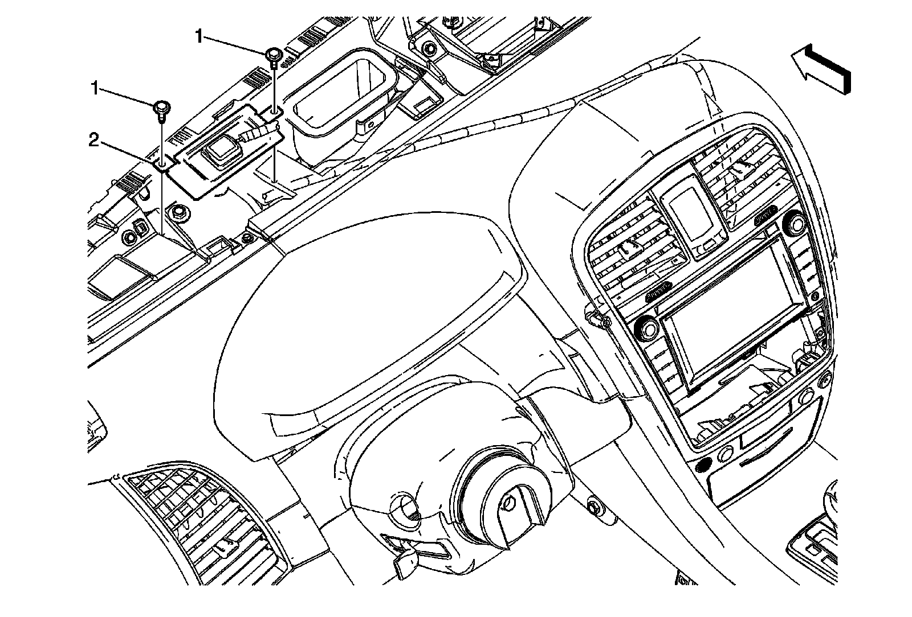
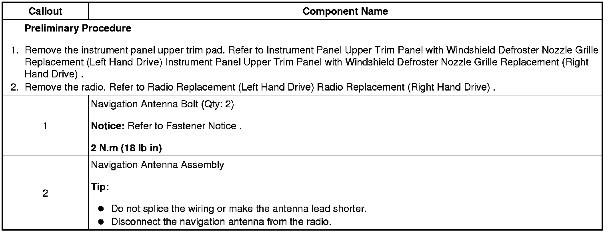

Operation CHARM
: Car repair manuals for everyone.
Home
>>
Cadillac
>>
2008
>>
SRX AWD V8-4.6L
>>
Repair and Diagnosis
>>
Accessories and Optional Equipment
>>
Antenna
>>
Antenna, Navigation
>>
Service and Repair
>>
Global Positioning System (GPS) Antenna Replacement (Left Hand Drive)
Global Positioning System (GPS) Antenna Replacement (Left Hand Drive)
Global Positioning System
(GPS) Antenna Replacement (Left Hand Drive)

